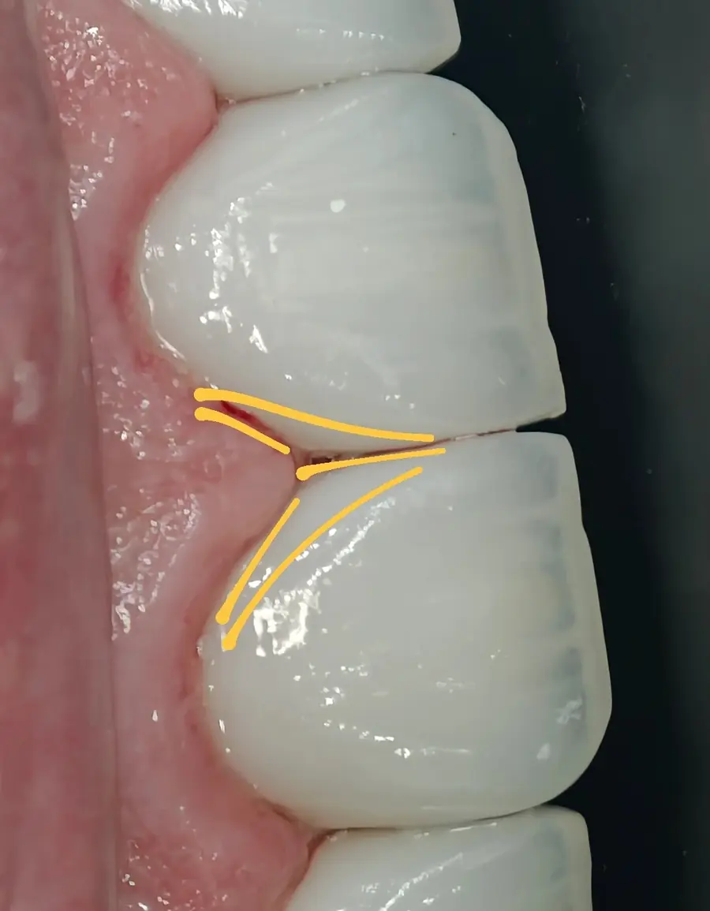

نسخه استخراجشده؛ ترجمه یا تأیید علمی انجام نشده است. وضعیت: captured
در این کیس لمینیت، سرامیک در ناحیهی سرویکال و پروگزیمال به سمت لثه و دندان مجاور امتداد یافته است و مثلث تیره از جلو کوچکتر دیده میشود. از سمت لینگوال چه اتفاقی افتاده است؟

ناحیهی مشخصشده با خط زرد همان بخشی است که به آن وینگ یا بالچه میگویند: سرامیک در ناحیهی سرویکال و پروگزیمال کمی بیشتر به سمت لثه و دندان مجاور امتداد پیدا میکند تا امبراژور ژینجیوال تنگتر شود و مثلث تیرهای که به دلیل تحلیل لثه یا فرم دندان ایجاد شده، کوچکتر به نظر برسد. تکنسین میتواند همین ناحیه را با استین کمی پررنگتر کار کند تا عمق پیدا کند و شبیه سایهی طبیعی بین دو دندان دیده شود.
وینگ فقط از سمت باکال دیده میشود، ولی از سمت لینگوال هم وجود دارد. اگر کانتکت باز نشده باشد و خط خاتمهی تراش در سمت لبیال کانتکت مانده باشد، تکنسین چارهای ندارد جز اینکه وینگ را به شکل یک بالچهی جدا روی پاپیلا بسازد. از جلو مثلث سیاه پنهان میشود، ولی پشت همان بالچه، در سمت لینگوال، یک فضای مقعر بین سرامیک و دندان باقی میماند که بهراحتی تمیز نمیشود؛ محل گیر پلاک و مستعد پوسیدگی.
وینگ بدون باز کردن کانتکت: از باکال زیبایی، از لینگوال پوسیدگی.
اگر قرار است وینگ داشته باشی، کانتکت باید باز شده باشد و تراش تا لینگوال کانتکت ادامه پیدا کرده باشد، تا سرامیک بتواند با یک پروفایل امرجنس محدب و پیوسته از داخل سالکوس بیرون بیاید و سمت لینگوال هم قابل تمیز شدن بماند.
باز کردن کانتکت رایگان نیست: مینای پروگزیمالی را میبرد که دیگر برنمیگردد. این هزینه بسته به شرایط کیس دو معنی کاملاً متفاوت دارد:
لزومی ندارد کل امبراژور بسته شود؛ اتفاقاً بستن کامل گرانترین بخش کار است. منطقش شبیه بستن دیاستم است: هر چه کانتکت سرامیکی پایینتر و نزدیکتر به پاپیلا برده شود، سرامیک باید از ناحیهی سرویکالتری از دندان بیرون بزند، و برای اینکه آنجا اورکانتور و لبهدار نشود، تراش باید در همان ناحیه عمیقتر و مارجین زیرلثهایتر باشد. این همان ناحیهای است که مینا کمترین ضخامت را دارد و تراش عمیقتر تقریباً بهطور قطع مارجین را روی عاج یا سمان میاندازد، آن هم زیر لثه که باندینگ و کنترل رطوبت سختتر است. از طرف دیگر، در مثلثهای بزرگ نتیجهی بستن کامل یک کانتکت بلند و غیرطبیعی است که لزوماً از خود مثلث زیباتر نیست.
کاهش کنترلشده معمولاً انتخاب بهتری است: جایی متوقف میشوی که مارجین هنوز روی مینا یا نزدیک به آن است، امرجنس بدون تراش اضافه محدب میماند، و کانتکت تناسب طبیعی خودش را حفظ میکند.
کوچکتر شدن مثلث با این شرایط خودش نتیجهی موفق است، به شرط اینکه بیمار هم از قبل همین را انتظار داشته باشد.
نوع سؤال: ساخت کلمه · 5 خانه
حروف منبع: س · ا · ت · ن · ی